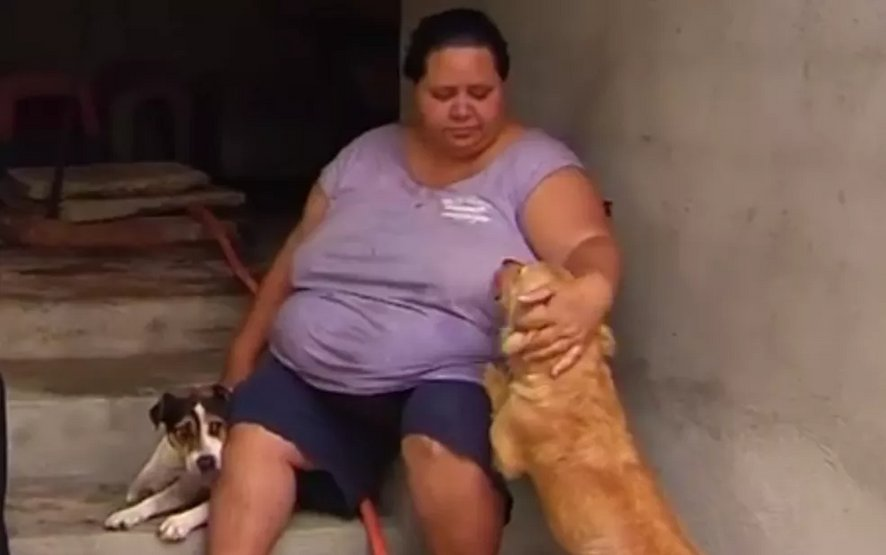
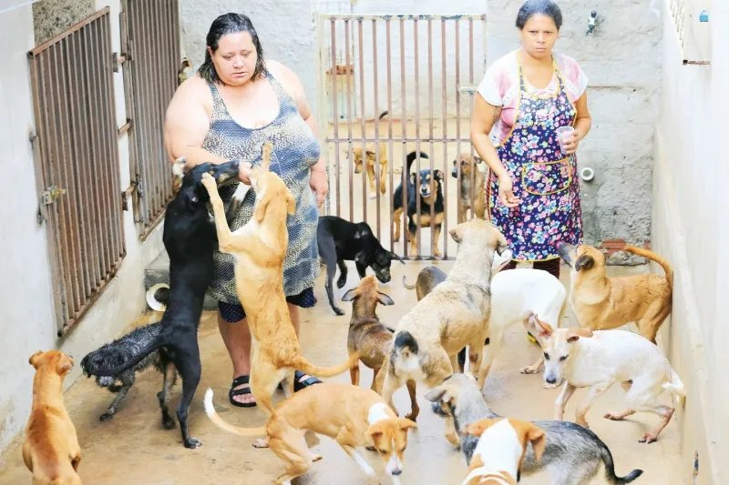
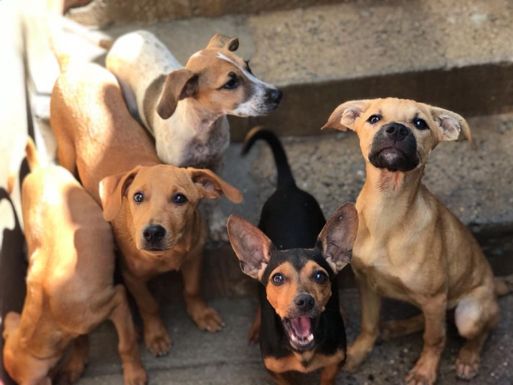

Desde uma rua de Goiânia
Mais de 25 anos abrindo a porta para quem foi deixado para trás.
O que começou com uma protetora resgatando os animais abandonados da própria rua virou um abrigo mantido por voluntários, que já tirou mais de mil cães e gatos do abandono.


01Nossa história
- O começo
O abrigo foi fundado pela protetora Lívia Denise Camargo Borges dos Passos, que há mais de 25 anos iniciou seu trabalho resgatando animais abandonados em sua rua. Desde então, suas portas sempre estiveram abertas para cães e gatos em situação de abandono e maus-tratos.
- A causa cresce
Com o passar dos anos, seu trabalho ganhou força, contando com o apoio de voluntários que abraçaram sua causa, enquanto Lívia dedicava-se integralmente a proporcionar dignidade e cuidado aos animais que cruzavam seu caminho.
- 2018
O trabalho se formaliza como associação sem fins lucrativos: nasce a AADARPA.
- 2021
Infelizmente, em agosto de 2021, Lívia faleceu em decorrência de complicações da Covid-19. Desde então, o trabalho vem sendo conduzido pelos voluntários que sempre estiveram ao seu lado.
- 2022
Após visita técnica, a Prefeitura de Goiânia atesta e documenta que a AADARPA está em efetivo funcionamento, servindo desinteressadamente à coletividade, para fins de utilidade pública municipal.
- 2026
A AADARPA é declarada de utilidade pública pelo Estado de Goiás.
Temos como maior missão manter vivo o legado de amor e dedicação que Lívia deixou, continuando a acolher e cuidar dos animais mais necessitados.
02Nossa missão
Resgatar cães e gatos abandonados e vítimas de maus-tratos em Goiânia, oferecendo abrigo, alimentação e cuidado veterinário até que cada um encontre uma família responsável. E, além do cuidado direto, atuar pela saúde pública e pelo meio ambiente: prevenir zoonoses, reduzir o número de animais nas ruas e incentivar a adoção e a guarda responsável.
03O que fazemos

Resgate
Acolhemos cães e gatos abandonados, feridos ou vítimas de maus-tratos.
Cuidado veterinário
Todos recebem tratamento, vacinação e vermifugação, e saem castrados ou com vale-castração.
Adoção responsável
Buscamos para cada animal um lar seguro e definitivo.
Saúde pública
Castração e vacinação previnem zoonoses e o crescimento da população de animais nas ruas.
Agora mesmo
Eles estão esperando uma família →04Transparência
- Razão social
- AADARPA Associação Abrigo dos Animais Refugados Proteção Animal
- CNPJ
- 42.536.111/0001-67
- Natureza jurídica
- Associação privada sem fins lucrativos, desde 11/09/2018
- Utilidade pública
- Estadual, pela Lei nº 24.351, de 15/06/2026 (Goiás). Municipal: atestado da Prefeitura de Goiânia para fins de utilidade pública, de 14/10/2022
- Sede
- Goiânia-GO
- Contato
- aadarpagoiania@gmail.com
Veja as parcerias com o poder público e onde os recursos foram aplicados →
Por segurança dos animais, não divulgamos o endereço do abrigo: abandonos na porta colocam em risco os que chegam e os que já estão lá. Visitas e adoções são combinadas pelo Instagram.